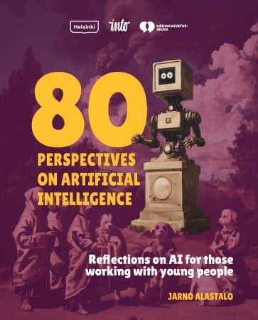

Jarno
Alastalo
Techno-philosopher · Speaker · Author
Jarno Alastalo is a techno-philosopher, author, builder of digital communities, and expert on cat videos who has designed black boxes. He examines technology from a human perspective: how artificial intelligence, social media, and algorithms shape humanity, identity, and values.

“We have entered the Age of Non-Intelligence. It is an era that offers us two paths: either we become the foolish users of smart machines, or we learn to use them wisely to enrich our own thinking.”Jarno Alastalo

New book, in Finnish
The Black Box
Musta laatikko – Tekoälyttömyyden ajan alku
(The Beginning of the Age of Non-Intelligence)
The Black Box is a journey of exploration into a world where algorithms, artificial intelligence and invisible systems shape our emotions, our choices and our communities.
We have entered the Age of Non-Intelligence: either we become the foolish users of smart machines, or we learn to use them wisely. AI works inside a black box, a system whose workings we cannot see but whose effects we feel. What happens when AI becomes a teacher, a friend and a mirror?
If AI chose wisely, would you let it decide about your life? Or your death? This book invites you to look beneath the surface.
The book is available at the publisher’s shop. You can also ask me directly: jarno@csy.fi
True Stories for the Bookshelf
Jarno Alastalo’s works explore social phenomena through social media, unusual human stories, and the darker sides of the internet.


Download it for free
80 Perspectives on AI – A Guide to Youth Work
This book opens up the world of artificial intelligence for those working with young people. It provides perspectives on the responsible use of AI and helps readers understand how to support young people’s critical thinking in the age of technology. The book is based on interviews with more than 30 experts and young people, and it focuses especially on the elements AI cannot replace: genuine empathy, an understanding of vulnerability, and cultural literacy.
Download (PDF)
Who is Jarno Alastalo?
Jarno Alastalo is one of the few people in Finland who has built a social media platform with over one million users and has witnessed firsthand how people behave in digital communities.
Jarno is a passionate speaker who brings a down-to-earth perspective to digital culture. His presentations not only deliver knowledge but are also visually engaging and well-paced. He has a deep understanding of how the digital world affects us all, especially from the perspective of young people.
Jarno Alastalo doesn’t just talk about digitalization – he lives it, bringing fresh insights and hands-on experience. His diverse background as Director of Online Business at Aller Media, founder of the Suomi24 community, and builder of the Heimo social media startup makes him a unique and seasoned speaker. His current company, MPH Making People Happy, develops concepts and content for digital services and social media platforms.
He is also the author of the nonfiction books The Dark Net (2017), Stories from Social Media (2015), and Strange People (2020).
Jarno’s audiences have included media executives, government ministries, large corporations, youth workers, teachers, students, social and healthcare professionals, and local communities.
As a Speaker
Jarno Alastalo is a techno-philosopher and author who brings clarity, depth, and storytelling to complex questions about AI, algorithms, and digital culture. His talks combine philosophical insight with practical examples, making them engaging for audiences ranging from corporate leaders to educators and youth professionals.
He is known for his ability to transform abstract ideas into vivid, accessible narratives and for creating presentations that are visually compelling and rhythmically well-structured. Whether addressing identity in the age of AI, the hidden power of algorithms, or the future of digital communities, Jarno’s keynotes inspire audiences to reflect, question, and take action.
Foolish Acts or Artificial Intelligence?
AI is not magic – but it makes us believe it is. This keynote reveals what AI really is, what it is not – and why it still succeeds in shaping our feelings, thoughts, and decisions.
Algorithms as Black Boxes
What happens when decisions are made by systems whose logic we cannot see or understand? Based on The Black Box (2026), this talk takes audiences deep into the invisible mechanisms of algorithms: how they shape everyday life, culture, and society – and who benefits from them.
AI and Identity
When the machine acts as a mirror, it does not reflect truth but selected, distorted versions of ourselves. What does this mean for identity formation, public debate, and our shared sense of reality?
Youth and AI
Young people are the first generation for whom AI has been part of daily life from birth. Algorithms recommend content, suggest words, and decide who is visible to whom. Through practical examples and young people’s own experiences, this talk dismantles myths and explores what kind of literacy is needed to understand AI – and what remains essentially human.
Digital Oligarchs and the Concentration of Power
A handful of tech companies now hold the power to define what we see and feel. How does this change democracy, values, and the future? And what alternatives do we have to build a different digital culture?
AI, Ethics and Humanity
Machines make mistakes, but they do not understand them. They feed us cognitive sugar and learn our weaknesses before we even recognize them ourselves. What ethical questions does this raise in education, decision-making, and everyday life?
Digital Identities, Loneliness and Communities
How do identities created online meet real life? Why doesn’t social media remove loneliness – and how might digital communities truly support us?
Digitalization, Climate and Everyday Life
The digital world carries power, but also consumption and environmental costs. How can we address the ecological impact of digitalization in media, education, and youth work?
Working with Young People
My specialty is speaking to educators, youth workers, and teachers about how AI and algorithms shape young people’s everyday lives, identities, and agency. My talks combine research, young people’s perspectives, and practical examples that provide tools for understanding machine logic and supporting critical thinking in the AI era.
For nearly a decade I have collaborated with the Centre of Expertise for Digital Youth Work (Verke) and numerous other organizations as an external expert and producer in projects, trainings, and content creation. This experience has deepened my perspective on how AI and digital culture affect young people’s worlds – and how professionals can respond to these changes.

Examples of Lectures
- Lapland Social and Health Conference “Syyspäivät”, Luosto, 2025 – The Beginning of the Age of Non-Intelligence
- NUORI25 Conference, Tampere Hall, 2025 – Why Trust AI If It Can’t Tell a Dog from a Muffin?
- Rovaniemi, 2024 – AI: Foolish Acts or Smart Support for Mental Health?
- SALTO Digital Dialogues, Europe, 2024 – Twin Transition in the Youth Field: Will Digital Technology Harm or Help Our Planet?
- Espoonlahti Parish, 2024 – Does Social Media Make Young People Miserable or Happy?
- Church Education Days, Jyväskylä, 2024 – The Impact of Digitalization on Climate Change
- Häme & Uusimaa, 2024 – Digitalization for Youth Outreach Work
- Lapinlahti Upper Secondary School, 2023 – How Digital Communities Shape Our Perception of Reality
- Digital Youth Work – State of Play, Dublin, 2023 – Will Tech Save or Destroy Our Planet? A Youth Work Perspective
Feedback from Talks
“Just like a TED Talk!”
“Excellent speaker!”
“Jarno’s session was the right length, inspiring, and even a bit surprising.”
“A brilliant session! More of these, please! Exactly the insights I’ve been looking for. Fantastic, thank you!”
“A very visual presentation and an interesting set of themes.”
“The talk included new insights into young people’s digital behavior.”
“You were great – you spoke about digitalization and the future in a way that was clear and enthusiastic.”
“You were a truly inspiring speaker!”
Get in Touch
Would you like to book a talk, ask for more information or discuss working together?
Send me a message – I’m happy to reply.
Media Highlights
Jarno Alastalo’s work and ideas have been widely featured in both international and Finnish media:
- Vogue Italia
Helping Networks (2016)
Profile on Jarno Alastalo and the Heimo community platform.
- Helsingin Sanomat
“Even introverts dare to open up online”
Coverage of online communities and the Heimo platform.
- Yle
Finnish Broadcasting Company
Multiple features on Radio Suomi, Aamu-TV, and Juuso Pekkinen program on the dark web and digital culture.
- MTV News
The Tor network, the dark web and Vastaamo
Expert commentary on the Tor network, the dark web, and the Vastaamo data breach.
- Kirkko ja Kaupunki
Digital culture, empathy and online communities
Interviews on digital culture, empathy, and online communities.

- Iisalmen Sanomat
Mobile dependency and the need for connection
Article on mobile dependency and the enduring human need for connection.
- Radio Rock
Korporaatio Morning Show
Interview on Jarno’s book Strange People (Oudot tyypit).